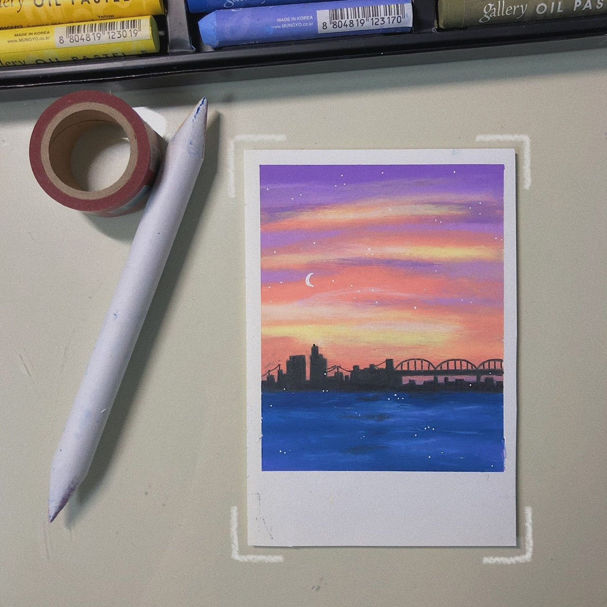
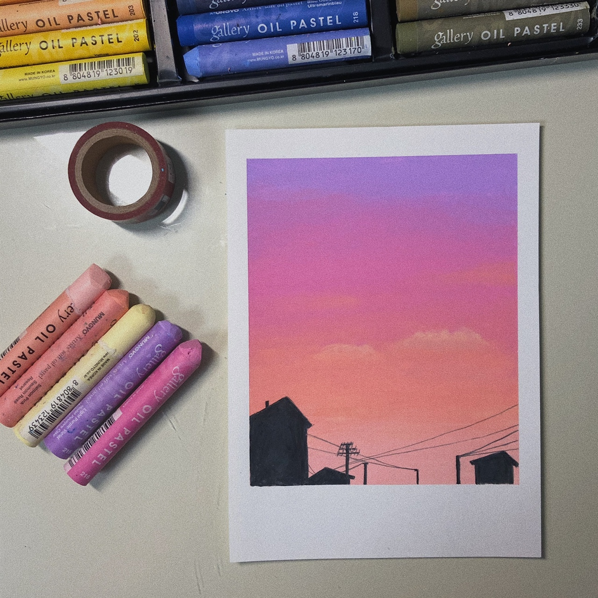
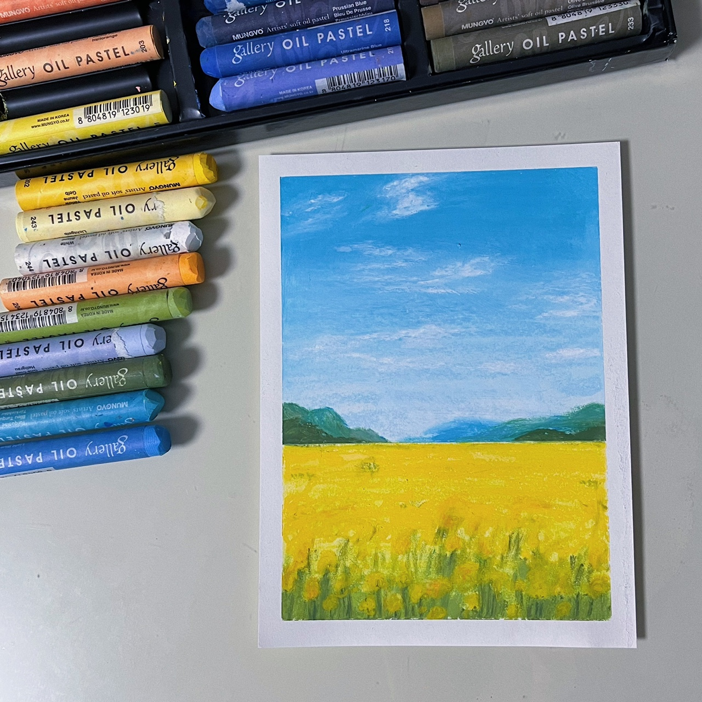
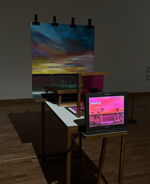
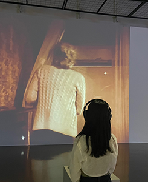
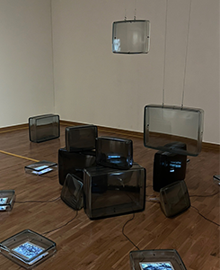

About
조화로운 디자이너를
꿈꾸는 유미정입니다.
Profile
유미정
1999.12.12
대구 북구 거주
License
웹디자인 기능사
GTQ 2급
컴퓨터활용능력 2급
Skills
90%
80%
80%
70%
50%
Photoshop
Illustrator
Html5
CSS3
js & jquery

DRAWING
오일파스텔을 이용해 풍경화를
따라서 그리는 것을 좋아합니다. 그림을 그리다보면
생각정리도 되며 가끔 아이디어를 얻기도 합니다.
-

오일파스텔 드로잉
-

오일파스텔 드로잉
-

오일파스텔 드로잉
exhibition
때론 전시회 관람하는 것을 좋아합니다.
작품들을 보면서 작가의 의도, 배경 등을 파악하는 것에
재미를 느낍니다. 요즘 트렌드는 무엇인지도 전시회 인테리어를
보면서 알 수 있어 좋아합니다.
-

부산현대미술관
-

부산현대미술관
-

부산현대미술관